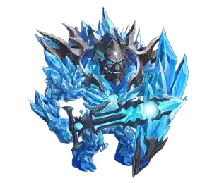
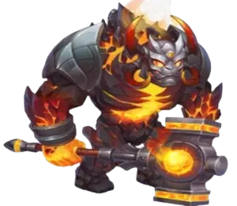
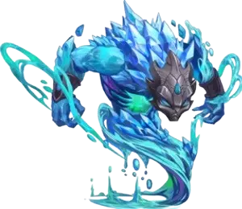

| Main Attributes |
|---|
| Attributes |
| Position: Middle Line |
| Function: Super Titan Marksman |
| Main Element: Fire |
| How to Obtain Soul Stones: Events, Summoning Sphere |
| Tier List 2024 |
|---|
| Tier List |
| Titan Tier List 2024: S |
| Dungeon Tier List 2024: S |
Araji, the fire element's Super Titan, possesses two formidable skills. Firstly, his passive ability accelerates allies by 30% for eight seconds, boosting your team's energy generation and enabling swift attacks against enemies. Secondly, Araji's Ultimate unleashes a blazing beam towards foes on the front lines, inflicting substantial damage.
Including Araji in your Titan lineup can significantly alter battle outcomes. He seamlessly integrates into various Titan teams during wars, proving especially effective alongside fire element ally Ignis, who amplifies damage to allied Titans.
However, Araji has vulnerabilities, notably against the water element Titan Sigurd, who activates a shield rendering him invincible for a few seconds. Moreover, he struggles against newer Titans boasting enhanced defenses against traditional foes. Araji faces particular difficulty against the tank Titan Brustar, whose shield reflects all damage received back at Araji.
To maximize Araji's effectiveness, consider his synergies and weaknesses when forming your team composition. By strategizing around his strengths and mitigating his vulnerabilities, you can unleash Araji's full potential on the battlefield.
Araji demonstrates exceptional strength in dungeon scenarios, especially when he reaches his maximum potential. At this stage, he becomes capable of effectively supporting a fire-based team, often carrying them alone through multiple floors.
The recommended strategy involves incorporating Araji into 5 versus 5 dungeon teams alongside Titans like Hyperion, Avalon, and Sigurd. This composition aims to leverage Araji's abilities to restore the health of tank Titans, with a special focus on supporting the tank Titan, Angus. However, for situations requiring additional support for Moloch's survival, it is advisable to substitute Araji with Iyari.
This strategic approach maximizes Araji's utility within dungeon encounters, emphasizing his role in sustaining the team's frontline units and ensuring their longevity throughout dungeon exploration. By carefully selecting team compositions and adjusting them based on specific challenges encountered in the dungeon, players can leverage Araji's strengths to overcome obstacles and progress efficiently through dungeon floors.
When considering Araji's artifacts, it's crucial to prioritize the enhancement of the Attack Seal. This artifact not only boosts physical attack but also augments health, which proves invaluable given Araji's positioning from the middle to the front line, where he often absorbs considerable damage. Next in line for enhancement should be the Crown of Fire, aimed at fortifying defense and amplifying damage specifically against earth titans.
Lastly, allocating resources to level up Araji's weapon becomes imperative to enhance the overall damage output against earth titans, benefiting not only Araji himself but also all fire element allies in the battle. This strategic investment in artifact enhancement can significantly bolster Araji's effectiveness on the battlefield, ensuring that he not only survives but also thrives in combat scenarios.
| Priorities | Artifacts | Stat Increase |
|---|---|---|
| 1st | Seal of Attack | Physical Attack +107400, Health +3450000 |
| 2nd | Crown of Fire | Damage +255000 and Defense +100500 Extra to Earth Titans |
| 3rd | Ragni's Beast (Weapon) | Extra Damage to Earth Titans +150000 |
Currently, Araji boasts a selection of two physical attack skins, each serving as a valuable asset in bolstering his offensive capabilities on the battlefield. These skins play a pivotal role in enhancing his prowess when engaging enemies, providing versatility and adaptability to suit various combat scenarios.
The availability of multiple physical attack skins for Araji presents an opportunity for strategic customization, allowing players to tailor his appearance to their preferred playstyle or tactical requirements. Whether opting for a more aggressive approach or focusing on sustained damage output, the diverse range of skins empowers players to optimize Araji's performance to suit their individual preferences.
With a selection of two physical attack skins at your disposal, Araji gains increased flexibility and adaptability in combat situations. Harnessing the power of these skins, you can unleash Araji's full potential, maximizing his effectiveness as a formidable force on the battlefield.
| Priority | Skins |
|---|---|
| 1st | Physical Attack +196800 |
| 2nd | Physical Attack +196800 |
Description: Araji speeds up allies by 30% for eight seconds, increasing your team's energy generation and enabling them to attack enemies more swiftly.
Strategic Use: Activate this passive ability strategically to enhance your team's mobility and aggression. The increased speed can help your team reposition, chase down enemies, or retreat from dangerous situations.
Description: Araji launches a beam of fire towards enemies on the front line, dealing substantial damage over 7.0 seconds.
Damage Calculation: (Total Physical Attack x 100%) = 758,963 per second.
Strategic Use: Utilize Araji's ultimate ability to inflict significant damage to enemies, especially those on the front line. This ability can help break through enemy defenses and weaken frontline units.
With a solid understanding of Araji's abilities and strategic insights into their use, you can effectively utilize this formidable Titan in Hero Wars, leading your team to victory on the battlefield.
| Angus | Eden | Avalon | Nova | Moloch |
| Counters | What happens |
|---|---|
 Sigurdo |
Sigurd Ultimate uses a shield that makes him invincible for 5 seconds, thus blocking Araji's Ultimate attack. |
 Moloch |
If Araji is positioned on the front line next to the allied tank, he can be hit by Moloch's Ultimate and be stunned for 5 seconds. |
 Mairi |
Mairi's Ultimate reduces enemies' attack by 40%, for 8 seconds. This way, Araji deals less damage to tank enemies on the front line. |
| Mort curses the enemy with the highest physical attack, reducing health and physical attack attacks, as Araji has a lot of physical attacks, Araji has a chance of being Mort's first target in almost every battle. |
| # | Titans |
|---|---|
| 1 | Amon, Eden, Iyari, Araji, Sigurd |
| 2 | Amon, Hyperion, Iyari, Araji, Sigurd |
| 3 | Amon, Ignis, Iyari, Araji, Moloch |
| 4 | Amon, Iyari, Araji, Nova, Angus |
| 5 | Keros, Mort, Araji, Nova, Angus |
| 6 | Keros, Mort, Iyari, Araji, Angus |
| 7 | Keros, Mort, Hyperion, Araji, Sigurd |
| 8 | Hyperion, Eden, Iyari, Araji, Moloch |
| 9 | Hyperion, Eden, Iyari, Araji, Sigurd |
| 10 | Mort, Hyperion, Eden, Araji, Angus |
| 11 | Hyperion, Eden, Araji, Nova, Angus |
| 12 | Hyperion, Eden, Araji, Nova, Moloch |
| 13 | Hyperion, Eden, Araji, Nova, Sigurd |
| 14 | Ignis, Eden, Araji, Nova, Moloch |
In conclusion, Araji emerges as a formidable force on the battlefield, wielding powerful abilities that can turn the tide of any encounter. With his passive skill, Herald of the Flame, Araji enhances his team's mobility and aggression, while his ultimate ability, Incineration Radius, deals substantial damage to enemies, particularly those on the front line. By strategically incorporating Araji into Titan teams, players can capitalize on his strengths and overcome formidable challenges in Hero Wars. Whether leading the charge or supporting allies, Araji proves to be a valuable asset, paving the way for victory on the battlefield.
 Éden
Éden